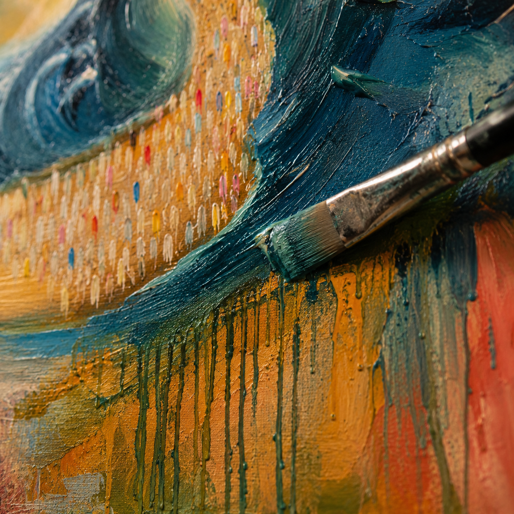
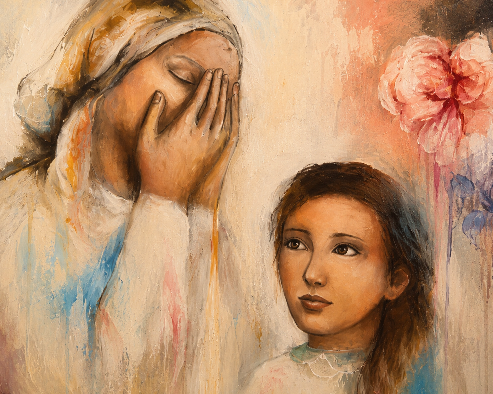

About Sarah
I've loved painting for as long as I can remember. What began as a childhood passion became a lifelong way of exploring ideas, emotion and colour.
Inspired by Jewish life, family and faith, I create original paintings that combine realism with expressive, abstract brushwork. Working with acrylic, ink and oil, I aim to capture moments that feel joyful, meaningful and full of life.
Every painting is created by hand in my studio in Israel. My hope is that each piece brings warmth, beauty and a sense of connection to the homes it becomes part of.


My Process
I build each painting in layers, beginning with acrylic and ink before adding oil to create richness, depth and detail. I enjoy balancing realism with expressive brushwork, allowing the paint itself to become part of the story.
What Inspires Me
Jewish life is full of beautiful moments that deserve to be remembered—family, tradition, celebration, resilience and hope. Those moments inspire my work, but I also want each painting to speak to anyone who connects with beauty, emotion and storytelling.
